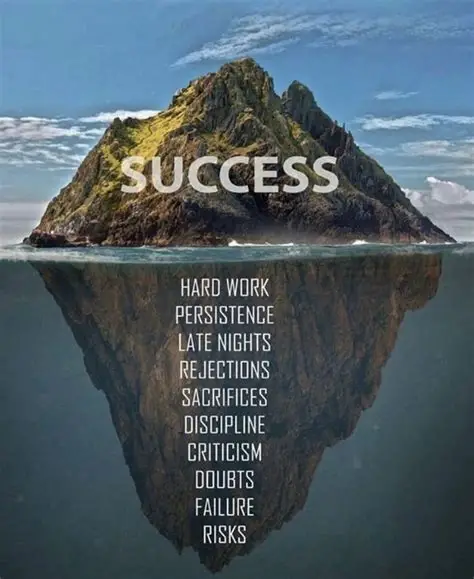

Seeds of Growth
Growth rarely happens in loud moments of victory. Most transformation begins quietly — like a seed beneath the soil.

The seed does not rush. It absorbs the darkness, gathers strength, and slowly prepares itself to break through the earth toward the light.
Human growth works in the same way. Our struggles, doubts, and silent reflections often become the fertile ground where our strongest wisdom develops.
Every person carries seeds of growth within them. When patience, courage, and hope nourish those seeds, something powerful begins to emerge.